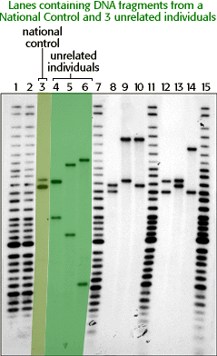

|  |
In lanes 4, 5, and 6 the DNA analyst loaded DNA from 3 unrelated individuals. Notice how none of their bands match with one another. Unrelated individuals will, however, occasionally share bands. For example, in this case, it appears that the top band in lane 4 could match the bottom band in lane 9 (Bob's DNA). DNA analysts are careful to always use a control when performing DNA analysis. In lane 3, Bob loaded a DNA sample that should always have bands in the same place on an autorad. If the control bands do not appear where the analyst expects them to be, the integrity of the rest of the information in the autorad is often questioned. If the control bands do appear where they should be, then the analyst has confirmation that the autorad contains usable information. In this case, the control bands were good. |


The Biology Project
University of Arizona
Tuesday, August 20, 1996
Contact the Development Team
http://biology.arizona.edu
All contents copyright © 1996. All rights reserved.